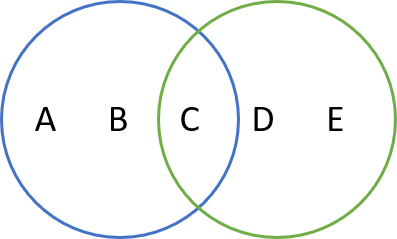

helloworld.py und geben Sie den Text "Hello World" aus.Beispiel Ausgabe:
Hello World
Geben Sie bitte Ihren Name ein: Beatrice
Hello Beatrice
hellojupiter.ipynb und führen Sie die aufgeführten Schritte durch.Hinweis:
eingabe = input("Geben Sie bitte einen Text ein:")
Operatoren, Variablen, Kommentare, Hilfe & Typ Informationen
rechteck.py und definieren Sie zwei Variablen für die Länge und Breite.Rechteck mit Länge 10 und Breite 5
- Umfang = 30
- Fläche = 50
fahrenheit.py und lesen Sie von der Konsole die Temperatur in Fahrenheit ein.Temperatur in Fahrenheit = 75.2
Fahrenheit = 75.2
Grad Celsius = 24.0
Hinweis:
eingabe = input("Geben Sie bitte einen Text ein:")
note.py, das von der Konsole eine Note im Bereich 1-6 als Ganzahl einliest.
Dazu müssen sie die Eingabe mit einem Cast auf einen Int konvertieren.Hinweis:
eingabe = input("Geben Sie bitte einen Text ein:")
Zusatz:
modulo.py, dass nacheinander alle ungeraden Zahlen zwischen 1 und 30 ausgibt. %.1 x 1 = 1
2 x 2 = 4
usw.
group.py mit der folgenden gemischten Liste: [7.5, 'Hello', 42, None, 'World', 1.25, 69, 12] values = [7.5, 'Hello', 42, None, 'World', 1.25, 69, 12]
- int = [42, 69, 12]
- float = [7.5, 1.25]
- str = ['Hello', 'World']
validation.py das beliebige Ganzzahlen einliest.Beispiel Ausgabe:
Geben Sie bitte einen Integer ein oder 'x' um die Eingabe zu beenden:
value = 1
value = 7
value = 9.5
Ungültiger Wert: 9.5 Geben Sie bitte einen Integer Wert ein!
value = 9
value = x
Eingegebene Werte:
[1, 7, 9]
maximum.py mit einer Funktion für die Berechnung des Maximum.None zuweisen und diesen in der Methode entsprechend abfragen. max(1,2) = 2
max(2,1) = 2
max(9,-15,-12) = 9
max(9, 15,-12) = 15
max(9,-15, 12) = 12
square.py mit einem Lambda Ausdruck, der als Parameter eine Zahl erhält und die
Quadratzahl zurückgibt. linear.py. y für x -2 = 0.0
y für x -1 = 0.5
y für x 0 = 1.0
y für x 1 = 1.5
y für x 2 = 2.0
y für x 3 = 2.5
compare.py das zwei Namen einliest.Beispiel Ausgabe:
Please enter:
Name 1 = Zoé
Name 2 = Andrea
Sorted names:
Andrea
Zoé
Hinweis:
eingabe = input("Geben Sie bitte einen Text ein:")
splitdate.py und definieren Sie einen String der ein Datum
mit Tagen, Monat und Jahr beinhaltet wie zum Beispiel "17.04.1966" oder "1.3.07".Date: 17.04.1966
day = 17
month = 04
year = 1966
Date: 1.3.07
day = 1
month = 3
year = 07
Hinweis:
numbers mit den folgenden Nummern: (7, 9, 16, 23, 4, 12, 99, 5)(7, 9, 16, 23, 4, 12, 99, 5)
7
5
(7, 9)
(99, 5)
8
4
99
numbers mit den Zahlen 1..20 und geben Sie diese auf der Konsole aus.even_numbers.
Verwenden Sie dazu eine Schleife. Geben Sie das Resultat auf der Konsole aus.odd_numbers.
Verwenden Sie dazu die filter() Funktion. Geben Sie das Resultat auf der Konsole aus.[1, 2, 3, 4, 5, 6, 7, 8, 9, 10, 11, 12, 13, 14, 15, 16, 17, 18, 19, 20]
[2, 4, 6, 8, 10, 12, 14, 16, 18, 20]
[1, 3, 5, 7, 9, 11, 13, 15, 17, 19]

mengen.py und definieren Sie die beiden Set blue und green wie abgebildet.Union blue+green = {'A', 'B', 'D', 'C', 'E'}
Intersection blue/green = {'C'}
Difference blue-green = {'A', 'B'}
Difference green-blue = {'D', 'E'}
| Key | Greeting |
|---|---|
| de | Guten morgen |
| fr | Bon jour |
| it | Buongiorno |
| en | Good morning |
i18n.py und verwalten Sie die Greetings aus der Tabelle in einem Dictionary mit dem
Key als Schlüssel.Geben Sie bitte Ihren Namen ein: Anna
Wählen Sie die Sprache [de, fr, it, en]: fr
Bon jour
Anna
| Nr | Name | Price |
|---|---|---|
| 11 | Bildschirm Belinea X3 | 499.50 |
| 12 | PC Tastatur Swiss German | 35.00 |
| 13 | Logitec Maus | 17.25 |
| 14 | USB Hub | 25.70 |
| 15 | Lautsprecher X66-12 | 87.90 |
article.py und verwalten Sie die Artikel aus der Tabelle in einem Dictionary:Beispiel Ausgabe:
List all articles:
{'name': 'Bildschirm Belinea X3', 'price': 499.5}
{'name': 'PC Tastatur Swiss German', 'price': 35.0}
{'name': 'Logitec Maus', 'price': 17.25}
{'name': 'USB Hub', 'price': 25.7}
{'name': 'Lautsprecher X66-12', 'price': 87.9}
Show article with lowest price:
{'name': 'Logitec Maus', 'price': 17.25}
Give a 20% discount of all prices and list articles:
{'name': 'Bildschirm Belinea X3', 'price': 399.6}
{'name': 'PC Tastatur Swiss German', 'price': 28.0}
{'name': 'Logitec Maus', 'price': 13.8}
{'name': 'USB Hub', 'price': 20.560000000000002}
{'name': 'Lautsprecher X66-12', 'price': 70.32000000000001}
Kreis mit dem Attribut radius.Kreis mit Radius 3
- Umfang = 18.849
- Fläche = 28.274
Hinweis:
import math
print (math.pi)
Zylinder, die die Klasse Kreis um ein zusätzliches
Attribut für die Höhe erweitert.Kreis mit Radius 3
- Umfang = 18.84955592153876
- Fläche = 28.274333882308138
Zylinder mit Radius 3 und Höhe 5
- Volumen = 141.3716694115407
Hinweis:
from Kreis import Kreis
Fahrzeug.pyFahrrad mit Farbe=silber, Baujahr=2020, Marke=Scott
Fahrrad fährt...
PKW mit Farbe=rot, Baujahr=2007, Sitzplätze=4
PKW fährt...
MathUtil mit folgenden statischen Methoden:Das Maximum von 5,12,20 ist: 20
Das Minimum von 5,12,20 ist: 5
Das Maximum von 49,3,14 ist: 49
Das Minimum von 49,3,14 ist: 3
Vorbereitung
Per default sind im VS Code Unit Tests ausgeschaltet. Diese müssen sie zuerst aktivieren. Folgen Sie dazu
der Beschreibung in den Installationshinweisen Python-Installation.pdf.
Ausgangslage
Aufgabe
min() und max() der MathUtil Klasse sollen mit einem Unit Test überprüft werden.import unittest
class MathUtilTest(unittest.TestCase):
...
test erstellen
und die gewünschte Funktion überprüfen. def test_max(self):
expected = 20
actual = MathUtil.max(5,12,20)
self.assertEqual(expected, actual)
MathUtil_test und definieren Sie entsprechende Testmethoden zum überprüfen
der beiden Methoden min() und max().names.py und lesen Sie die Textdatei names.txt ein.Elias
Theo
...
Ida
Anna
names-sortet.txt:Anna
Anton
...
Sarah
Theo
books.py und lesen Sie die Textdatei books.txt ein.Diese enthält Bücherdaten in der fogenden Form:
ISBN
Title
Author
Publisher
978-0-316-45742-2
The Coast-To-Coast Murders
James Patterson
Little Brown USA
978-0-525-95498-9
...
['ISBN', 'Title', 'Author', 'Publisher']
['978-0-316-45742-2', 'The Coast-To-Coast Murders', 'James Patterson', 'Little Brown USA']
u.s.w.
books.csv:ISBN,Title,Author,Publisher
978-0-316-45742-2,The Coast-To-Coast Murders,James Patterson,Little Brown USA
978-0-525-95498-9,The Evening and the Morning,Ken Follett,Penguin LCC US
978-1-250-14523-9,All the Devils Are Here,Louise Penny,Macmillan USA
calculator.py mit folgenden Methoden:5 + 2 oder 7 / 3.Beispiele:
Calculate: 7 * 3
21.0
Calculate: 5 = 6
Unknown operator
Calculate: 13 / 0
Division by zero
dirs.py dass mit Hilfe einer Rekursion den Inhalt des
Verzeichnis c:/../python/example/09-apps/ vom Python Projekt ausgibt.os.listdir(), os.path.isdir() und os.path.isfile()
der os Bibliothek.bookservice
books.py
bookservice.py
debug.bat
debug.sh
run.bat
run.sh
static
404.html
index.html
movies
movieservice.py
run.bat
run.sh
model
model.py
imdb
imdb_mlp.pkl
imdb_tfidf.pkl
static
index.html
scikit
plot_cluster_iris.ipynb
plot_iris_dataset.ipynb
plot_pca_iris.ipynb
references.md
Schauen Sie sich die Regular Expression Beispiele aus den Kursunterlagen oder den folgenden Tutorials an und probieren Sie einige davon aus:
Erstellen Sie ein Script calculations.py und importieren Sie die numpy Biblothek.
Führen Sie anschliessend folgenden Aufgaben aus:
Berechnungen
6er Reihe
Lottozahlen
Beispiel Ausgabe:
Berechnungen:
x: [ 10 15 30 -25]
y: [27 27 27 27]
6er Reihe: [ 6 12 18 24 30 36 42 48 54 60]
Minimum: 6
Maximum: 60
Mittelwert: 33.0
Standardabweichung: 17.233687939614086
Lottozahlen:
{34, 3, 8, 43, 18, 25}
Arbeiten Sie das Jupiter Notebook mathplot-lib.ipynb (im Verzeichnis lab/08-ds-libs)
durch und lernen Sie einige Möglichkeiten der Mathplot Bibliothek kennen.
Schauen Sie sich die folgenden Anwendungsbeispiel (im Verzeichnis lab/09-apps) an.
Vorbereitung
Je nach Anwendungsbeispiel müssen weiter Packages installiert werden. Folgen Sie dazu der Beschreibung in den
Installationshinweisen Python-Installation.pdf.
schaltjahr.py welches eine Jahreszahl einliest und anschliessend ausgibt
ob es sich um ein Schaltjahr handelt oder nicht. Regeln zur Bestimmung eines Schaltjahr:
Alle 4 Jahre wird mit dem 29. Februar ein Schalttag eingefügt. Damit wird dem Umstand Rechnung getragen, dass ein Jahr nach dem gregorianischen Kalenderjahr nicht exakt 365 Tage dauert.
Pro Jahr gibt es mit dieser Lösung noch einen kleinen Fehler von einem Hundertertstel Tag zuviel. Deshalb wird alle 100 Jahre auf ein Schaltag verzichtet und zwar genau dann, wenn die Jahreszahl genau durch 100 teilbar ist. So ist zum Beispiel 1900 kein Schaltjahr, obwohl es durch 4 teilbar ist.
Nun braucht es noch eine weitere kleine Korrektur. Daher wird alle 400 Jahre noch ein Schaltjahr eingefügt, obwohl die Jahreszahl durch 100 teilbar ist. Mit dieser Regel ist zum Beispiel das Jahr 2000 ein Schaltjahr obwohl es durch 4 und 100 teilbar ist.
tree.py welches folgende Aufgaben löst.value, parent und childs sowie allen benötigten Methoden.Die Caesar-Verschlüsselung ist ein Verfahren für eine einfache Verschlüsselung von Text in einen Geheimcode. Dieser kann anschliessend auch wieder Entschlüsselt werden.
Schreiben sie eine Anwendung, welche einen Text und Schlüssel einliest.
Tipp::
ord('A') # 65
ord('Z') # 90
ord('a') # 97
ord('z') # 122
chr(ord('a')+1) # 'b'
ABC mit Schlüssel 2 = CDEA:C mit Schlüssel 2 = C:EHome | Top | Aktuelle Kurse